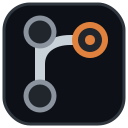

GH Reloaded
Settings are shared across every feature this extension injects into GitHub.
Features
Turn any feature off entirely — it stops running on github.com right away.
GitHub token
Used by the Dependency graph feature to read sub-issues, their "blocked by" relationships, Projects v2 Status, and org-level custom fields via the GitHub API.
Use a fine-grained token, scoped only to the repositories you actually need, with Issues: Read-only and Projects: Read-only — nothing else.
Quick-create shortcuts
Used by the Quick-create button feature: adds a small floating button to every GitHub Projects board view, linking straight to "new issue" for whichever repo you use for that — handy when the repo you file into isn't the one the board itself lives in. Nothing is preset; add your own.
Board dependency arrows
On a GitHub Projects Board (kanban) view, draws an arrow between any two currently-visible cards where one blocks the other — red if the blocker is behind the card it blocks, gray otherwise. Off by default (see Features above, or the switch next to the view tabs — only shown while a Board view is selected).
Full-width board
On a GitHub Projects Board (kanban) view, stretches the board to the full window width instead of the page's normal centered column — more room for columns before they need to scroll horizontally. On by default (see Features above).